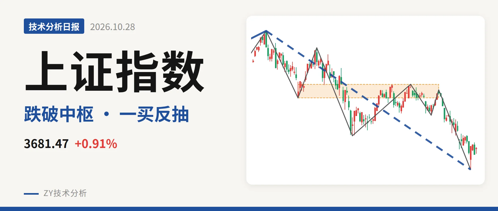
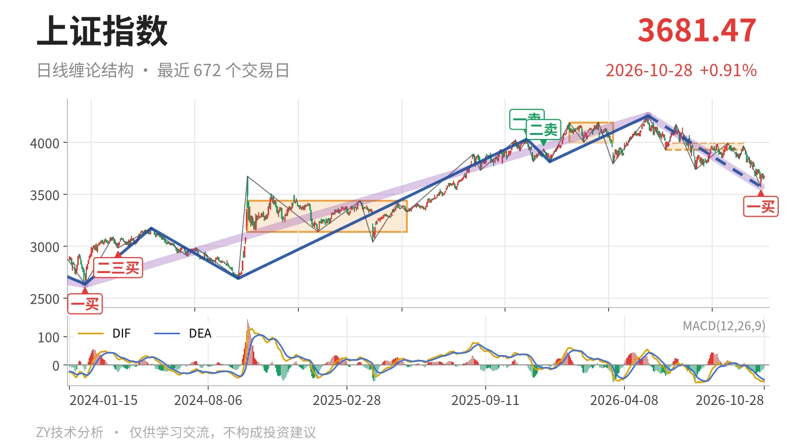
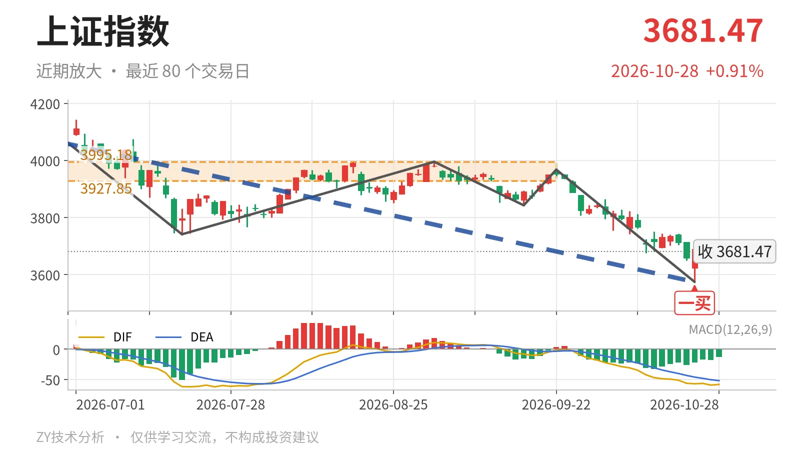

上证指数｜跌破中枢下沿后反抽未成笔，3928点定结构

最近日线中枢 3927.85—3995.18点，收盘位于中枢之下
一句话：跌破最近中枢下沿，反抽未成笔，结构偏弱看3928点
🧭 走势结构：大级别上涨未结束，日线下跌段仍主导
更大级别看，2024年2月5日至2026年5月14日上涨走势从2635.09点走到4258.86点，上涨约61.6%，这个上涨段没有结束；但5月14日以来的下跌段同样没有结束，最新收盘仍在这一段里。日线线段上，5月14日至10月23日下跌线段自4258.86点跌至3574.27点，内含7笔，还在延续。线段中枢方面，2021年7月28日至2023年5月9日中枢在3312.72—3418.95点，最新价3681.47点仍在其上方，大级别结构没有被破坏。所以当前不是日线级上涨结构，而是大级别上涨中的日线下跌段调整。

🎯 中枢位置：跌破最近中枢下沿，中枢下移
最近一个日线笔中枢为6月8日至9月22日的3927.85—3995.18点，尚未完成。最新收盘3681.47点低于该中枢下沿6.3%。结构上，中枢从1月14日至3月23日的4002.78—4190.87点，下降到6月8日至9月22日的3927.85—3995.18点，中枢在下移。价格在下沿下方运行，说明这次回落已经向下离开最近中枢，不是单纯的中枢内部震荡。
🔍 买卖点：10月23日一买后，反抽未成笔
日线笔级别一买出现在10月23日3574.27点，所在下跌笔为9月22日至10月23日，已经结束。之后三个交易日的反抽最高3708.20点、最低3648.30点，尚未构成日线笔，最新收3681.47点。此前2025年11月14日一卖4034.08点、2025年12月8日二卖3936.31点，卖点一个比一个低，日线上涨结构被持续压制。10月23日一买只是这段下跌中的第一次笔级抵抗，对应更大级别没有线段级买点。若后续再创新低，则3574.27点的一买只对应更小级别，日线下跌结构延续。

⚖️ 背驰：绿柱面积未缩，DIF低点未同步新低
取9月22日至10月23日下跌笔与6月23日至7月20日下跌笔作同向比较。前者绿柱面积347，DIF低点-57.1；后者绿柱面积289，DIF低点-61.8。价格从前低3741.11点继续下移到3574点，但DIF低点没有同步创新低，指标有钝化迹象；不过绿柱面积没有缩小，反而从289放到347，说明下跌动能没有真正衰竭，不是标准的“新低不新弱”。10月23日一买更多是小级别底背离传导，日线级别尚未出现标准趋势背驰。
🧱 关键位置观察：反抽站不上3928点，三卖条件在
最后未成笔的反抽最高3708.20点，距3928点还有约247点。反抽若回不到3928点上方，结构上构成日线笔三卖条件，5月14日以来的下跌段就还没结束；若能重新站上3928点，则6月8日至9月22日中枢扩展的概率上升，调整更可能转为中枢震荡。下方3574点若再失守，10月23日一买退化为更小级别信号。最新MACD的DIF在零轴下方，反抽未成笔，价格低于中枢下沿，结构偏弱。
⚠️ 本文为基于公开行情数据的缠论技术结构记录，由程序自动计算并生成，仅供学习交流，不构成任何投资建议。市场有风险，投资需谨慎。